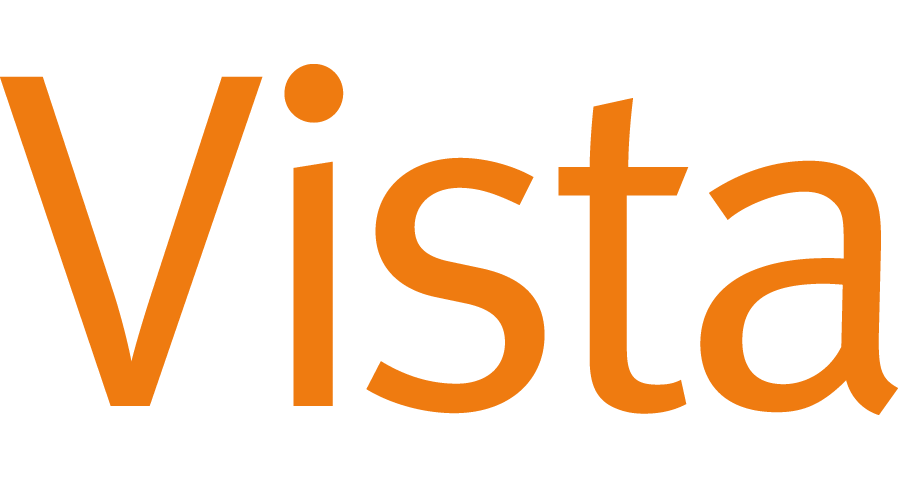
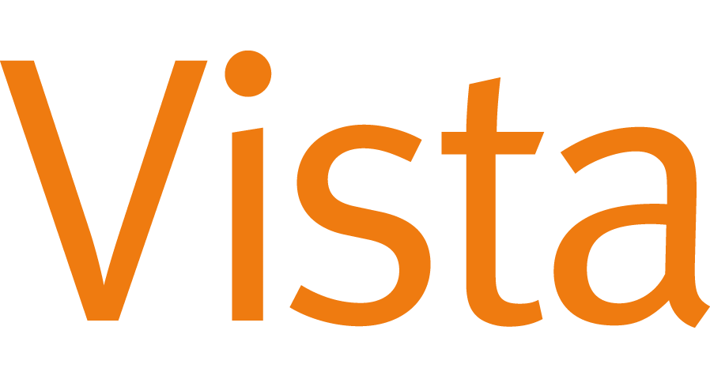

İşitme kaybının sizi insanlarla bağlantı kurmaktan ve anlamlı ilişkiler kurmaktan alıkoyduğunu hissettiniz mi? Kesinlikle yalnız değilsiniz; Amerika Birleşik Devletleri'ndeki milyonlarca yetişkin belirli düzeyde işitme kaybı yaşıyor ve işitme kaybı nedeniyle anlamlı sosyal bağlar kurmak zor olabilir. İşitme cihazları birçok kişiye partnerleriyle, aile üyeleriyle ve arkadaşlarıyla yeniden bağlantı kurma becerisi kazandırarak sonuçta genel yaşam kalitesini artırır. Bu blog yazısında işitme cihazlarının hem ilişkileri hem de sosyal yaşamı nasıl geliştirebileceğini ele alacağız.
Geliştirilmiş iletişim
İşitme cihazları topluma en açık avantajlardan birini sunar: gelişmiş iletişim. İşitme cihazları gürültülü ortamlarda insanların ne söylediğini anlamayı ve konuşmaları daha kolay takip etmeyi kolaylaştırarak sosyal katılımı kolaylaştırır ve bireyler arasındaki ilişkileri güçlendirir.
Artan Güven
İşitme cihazı takmak, yanlış anlaşılan konuşmalardan kaynaklanan kaygıyı azaltarak özgüveninizi artırmanıza da yardımcı olabilir. Daha fazla anlayışla, dersler veya sosyal toplantılar gibi etkinliklerin yanı sıra konuşmalara katılmanız da daha az garip hale gelecektir.
Daha Anlamlı Bağlantılar
İşitme cihazları aile, arkadaşlar ve partnerlerle ilişkileri güçlendirmeye yardımcı olabilir. İşitme kaybı çoğu zaman bireyleri birbirinden ayırır; ancak işitme cihazları bu engeli ortadan kaldırır, böylece daha anlamlı etkileşimler ve konuşmalar yapabilirsiniz.
İşitme Cihazları Yaşam Kalitesini Artırıyor
İşitme cihazları, işitme kaybı olan kişilerin yaşam kalitesini önemli ölçüde artırabilir. İşitme cihazı kullanımı sayesinde daha iyi iletişim, artan güven ve daha derin bağlantılar mümkün hale geldiğinde, kendinizi işitme kaybınız nedeniyle daha önce imkansız olan aktivitelere katılırken bulacak ve genel olarak yaşamda daha tatmin olmuş ve tatmin olmuş hissedeceksiniz.
Daha Aktif Bir Sosyal Yaşam
İşitme cihazları aktif bir sosyal yaşama olanak tanır. İşitme cihazları en büyük avantajlardan birini, aileniz ve arkadaşlarınızla sosyal aktivitelere katılımı sağlar. Konuşmalara katılmanın daha kolay olduğunu ve film veya ders gibi etkinliklere daha kolay katıldığınızı göreceksiniz; bu da daha az izolasyona yol açacak ve genel olarak daha iyi bir sosyal hayata yol açacaktır. İşitme cihazlarının bu faydaları hakkında işitme uzmanınızla konuşun.
Geliştirilmiş Güvenlik
İşitme cihazı takmak, potansiyel olarak riskli durumlarda sizi güvende tutmada çok değerli bir yardımcı olabilir. Daha iyi bir işitmeye sahip olarak, yangın alarmlarını veya araba kornalarını daha hızlı tespit edebilecek ve daha hızlı tepki verebileceksiniz, bu da size ek bir koruma katmanı sağlayacak ve genel güvenliği artıracaktır.
İşitme Cihazı Seçerken Dikkat Edilmesi Gereken En İyi Beş Özellik
Günümüzde piyasada çeşitli tipte işitme cihazları bulunduğundan , satın almadan önce mutlaka bir işitme uzmanına danışın. Benzersiz işitme gereksinimlerinize göre ideal bir işitme cihazının seçilmesine yönelik seçim sürecinize rehberlik edebilir ve cihazın optimum kullanımı hakkında paha biçilmez tavsiyeler sunabilirler. Uygun işitme cihazları kullanıldığında, gelişmiş işitmeyle ilgili tüm avantajlardan yararlanabilirsiniz. Faydalarını en üst düzeye çıkarmak için işitme cihazlarının bu en önemli beş özelliğini göz önünde bulundurduğunuzdan emin olun. Bunlar şunları içerebilir:
- Dijital gürültü azaltma : Bu özellik arka plan gürültüsünü azaltmaya yardımcı olur, böylece duymak istediğiniz seslere daha iyi odaklanabilir ve onları anlayabilirsiniz.
- Yönlü mikrofonlar : Yönlü mikrofonlar, seslerin kaynağının daha etkili bir şekilde belirlenmesine yardımcı olarak, kökenlerinin tam olarak belirlenmesini kolaylaştırır.
- Geri bildirim iptali : Bu özellik sayesinde geri bildirim azaltılabilir veya tamamen iptal edilebilir, böylece işitme cihazının daha konforlu bir kullanım deneyimi sağlanır.
- Bağlantı : Birçok modern işitme cihazı, akıllı telefonlar ve TV'ler gibi çeşitli cihazlarla eşleştirmeyi kolaylaştıran, ses seviyesini veya ayarları hızla ve anında ayarlamayı kolaylaştıran kablosuz bağlantılara sahiptir.
- Şarj Edilebilirlik : Bazı işitme cihazları, sürekli olarak yeni pil satın alma ihtiyacını ortadan kaldıran, cihazınızın en önemli anlarda hazır ve kullanılabilir kalmasını sağlayan şarj edilebilir piller sunar.
İşitme cihazı seçerken bu özellikleri göz önünde bulundurarak özel ihtiyaçlarınızı karşılayacak mükemmel cihazı satın aldığınızdan emin olabilirsiniz. Cephaneliğinizdeki uygun bir işitme cihazıyla, hayattan daha fazla keyif almanızı sağlayan gelişmiş ses kalitesi ve netliğin keyfini çıkarabilirsiniz.
İşitme cihazları, gelişmiş iletişim ve güvenlikten, daha derin bağlantılara ve genel olarak daha iyi bir yaşam kalitesine kadar çok sayıda avantaj sunar. İşitme kaybıyla yaşıyorsanız işitme cihazlarına yatırım yapmak hayatınızın her alanında çarpıcı bir etkiye sahip olabilir.
Bugün Bize Ulaşın!
Kaliteli İşitme ve Odyoloji Merkezi, işitme cihazlarının seçilmesi ve takılmasından sürekli bakım ve desteğe kadar kapsamlı hizmetler sunan deneyimli odyologlarla bireysel ihtiyaçlarınıza uygun ideal işitme cihazını bulmanıza yardımcı olabilir. Teknoloji ve uzman bilgisi sayesinde, bireysel gereksinimleri karşılamak için özel olarak tasarlanmış cihazlar sunarken, işitme cihazlarıyla ilgili her türlü soruyu yanıtlamak veya endişeleri gidermek için her zaman hazırdırlar. Kaliteli İşitme ve Odyoloji Merkezi'nin neler sunabileceği ve yaşam kalitesini nasıl artırabileceği hakkında daha fazla bilgi için bugün 816-233-0022 numaralı telefondan bizi arayın!
 
